Camera
This page provides information on the Camera rollout in the V-Ray tab of the Render Settings.
Overview
The camera rollout controls the way the scene geometry is projected onto the image. Here you can choose a camera type and set parameters for motion blur and depth of field.
Note: If you use the Physical Camera (VRayPhysicalCamera) in your scene most of the parameters in this section are ignored, with the exception of certain motion blur parameters (Auto exposure, Auto white balance, Shutter efficiency, Geometry samples, and Prepass samples).
UI Path: ||Render Setup window|| > V-Ray tab > Camera rollout

Parameters
The cameras in V-Ray generally define the rays that are cast into the scene, which essentially is how the scene is projected onto the screen. V-Ray supports several camera types: Standard, Spherical, Cylindrical (point), Cylindrical (ortho), Box, Fish eye, Warped sphere, Spherical panorama and Cube 6x1. Orthographic views are supported too.
Auto exposure 1 – Automatically determines an appropriate exposure value for the render. It requires Light Cache in Single frame mode to be set as a Secondary GI engine.
Camera/view – Specifies which camera and/or views to use the automatic exposure and white balance setting.
All cameras/views
Views/cameras without exposure only
Auto white balance – Automatically determines a suitable white balance value for the image. It requires Light Cache in Single frame mode to be set as a Secondary GI engine.
Transfer to selected cameras – This option is available only if Auto Exposure/Auto white balance is calculated and if there is a camera present in the scene. This option lets you transfer the calculations to a selected camera as an ISO correction, keeping the features affecting Depth of Field and Motion Blur unchanged (e.g. shutter speed, f-number). If there is no selected camera, the Select from scene window will open to select a scene camera from the list.
Type – Specifies the type of the camera. For more information, see Camera Types example or Camera Types Explained example below.
Default – Allows for the current scene camera to be used (usually a pinhole camera).
Spherical – A camera with a spherical lens.
Cylindrical (point) – This camera casts all rays from the center of a cylinder. In the vertical direction the camera acts as a pinhole camera, and in the horizontal direction the camera acts as a spherical camera.
Cylindrical (ortho) – This camera casts all rays from the center of a cylinder. In the vertical direction the camera acts as an orthographic view, and in the horizontal direction the camera acts as a spherical camera.
Box – Six standard cameras placed on the sides of a box, generating a vertical cross format image. This type of camera is excellent for generation of environment maps for cube mapping. The Box camera can also be used for generating irradiance maps for GI: First you would calculate the irradiance map with a Box camera, then save it to a file and finally reuse it with a Default camera that can be pointed in any direction.
Fish eye – This special type of camera captures the scene as if it is a pinhole camera pointed at a 100% reflective sphere that reflects the scene back into the camera's shutter, as with using a light probe in HDRI photography. You can use the Dist and FOV settings to control which part of the sphere is captured by the camera. Note that the virtual reflective sphere has always a radius of 1.0.
Warped spherical (old-style) – A spherical camera with slightly different mapping formula than the Spherical camera.
Orthographic – A camera enabling a non-perspective view similar to the standard Orthographic view in 3ds Max.
Perspective – Overrides the scene camera to force it to be a pinhole camera.
Spherical panorama – A spherical camera with independent horizontal and vertical FOV selection that is useful for generating latlong images for spherical VR use.
Cube6x1 – A variant of the Box camera with the cube sides arranged in a single row. Unlike the Box camera's output, Cube6x1 does not produce an empty space in the output image and is quite useful in generating cubic VR output.
Override FOV – When enabled, you can override the 3ds Max's FOV angle with the value entered. A possible reason for using this parameter is that some V-Ray camera types can take FOV ranges from 0 to 360 degrees, while the cameras in 3ds Max are limited to 180 degrees.
Cylinder height – Specifies the height of the Cylindrical (ortho) camera. This setting is available only when Type is set to Cylindrical (ortho).
Vertical FOV – Specifies the field-of-view angle in a vertical direction. Replaces Cylinder height when using a Spherical panorama camera type.
Fish eye auto-fit – Controls the auto-fit option of a Fish eye camera. When Auto-fit is enabled, V-Ray calculates the Fish eye dist value automatically so that the rendered image fits horizontally with the image's dimensions.
Fish eye dist – Applies only to the Fish eye camera. The Fish-eye camera is simulated as a Default camera pointed to an absolutely reflective sphere (with a radius of 1.0) that reflects the scene into the camera's shutter. The Fish eye dist value contorts how far the camera is from the sphere's center (which is how much of the sphere is captured by the camera). Note: this setting has no effect when the Auto-fit option is enabled.
Fish eye curve – Applies only to the Fish eye camera. This contorts the way the rendered image is warped. A value of 1.0 corresponds to a real world fish eye camera. As the value approaches 0.0, the warping is increased. As the value approaches 2.0, the warping is reduced. Note: this value controls the angle at which rays are reflected by the virtual sphere of the camera.
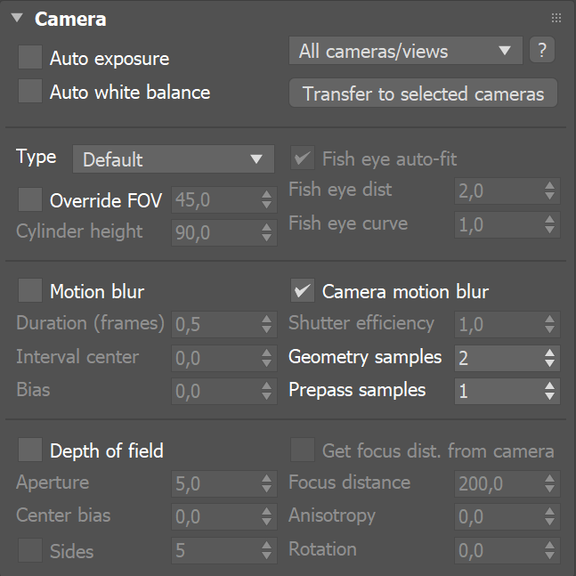
Example: Camera Types
The images below show the difference between the different camera types:
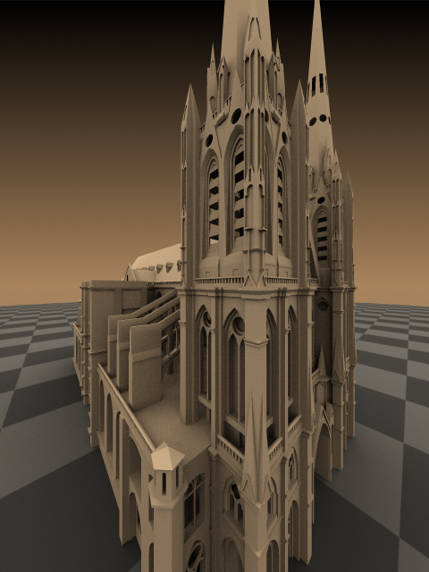
Default camera
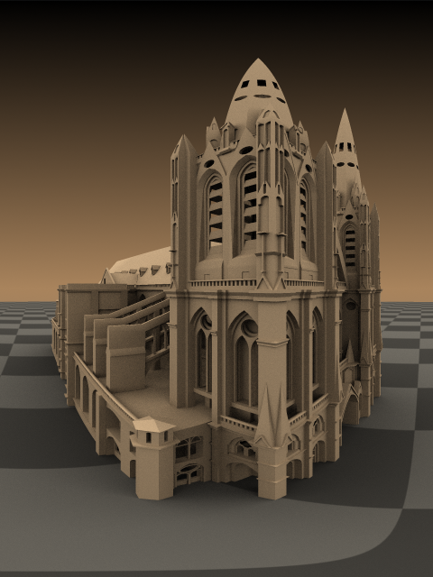
Spherical camera

Cylindrical camera
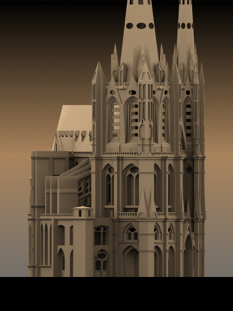
Orthographic camera
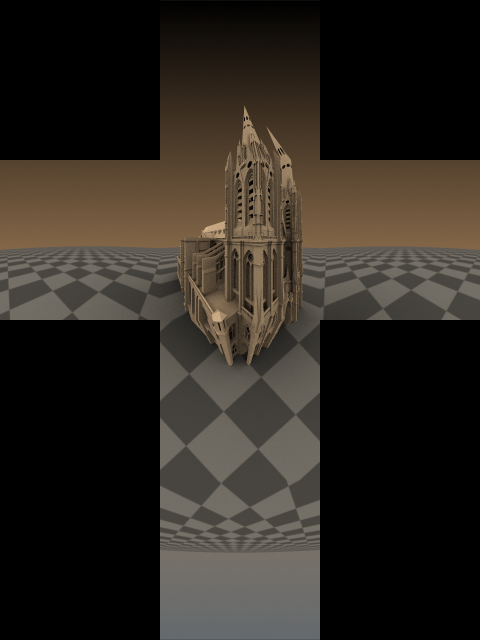
Box camera
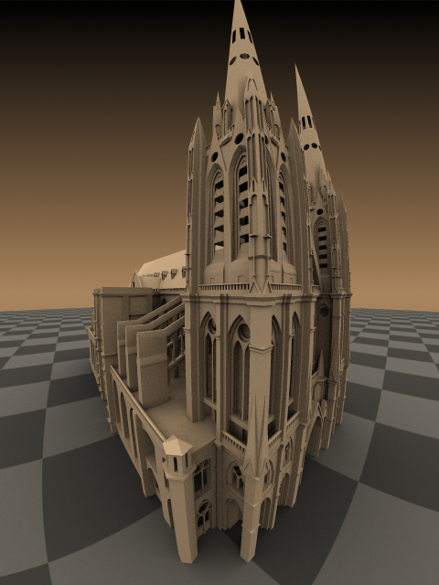
Fish eye camera
Example: Camera Types Explained
This example shows how the rays for different camera types are generated. The red arcs in the diagrams correspond to the FOV angles.

Default
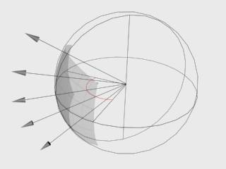 Spherical
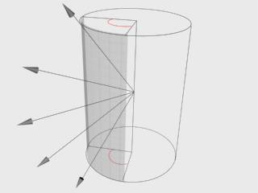 Cylindrical (point)
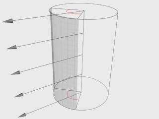 Cylindrical (ortho)
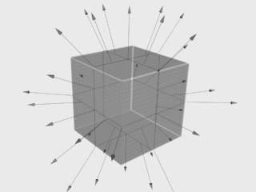 Box

Fish-eye
General Motion Blur Parameters
These parameters control the motion blur effect when rendering with a standard 3ds Max camera or with a perspective viewport. The parameters are ignored if you render from a Physical Camera (VRayPhysicalCamera) view.
The quality of the motion blur (the noise) is controlled from the settings of the currently selected image sampler.
Motion blur – Turns Motion Blur on. For more information, see The Motion Blur example below.
Duration – Specifies the duration, in frames, during which the camera shutter is open. For more information, see The Duration example below.
Interval center – Specifies the middle of the motion blur interval with respect to the 3ds Max frame. A value of 0.5 means that the middle of the motion blur interval is halfway between the frames. A value of 0.0 means that the middle of the interval is at the exact frame position. For more information, see The Interval Center example below.
Bias – Controls the bias of the motion blur effect. A value of 0.0 means that the light passes uniformly during the whole motion blur interval. Positive values mean that light is concentrated towards the end of the interval, while negative values concentrate light towards the beginning.
Camera motion blur – Enables the calculation of motion blur due to camera movement (as opposed to object movement).
Shutter efficiency – In real world cameras, the shutter requires some time to open and close which in turn affects the way motion blur looks. This is especially true for lenses with large apertures. To simulate this effect, the shutter efficiency parameter controls how the motion blur samples are distributed over the time interval of the shot. A value of 1 means that the samples are evenly distributed, as if the change from open to shut (or shut to open) is instant. Lower values place more samples towards the middle of the time interval to correspond to the open or close operation taking a small time interval, as occurs in real life.
Geometry samples – Determines the number of geometry segments used to approximate motion blur. Objects are assumed to move linearly between geometry samples. For fast rotating objects, you need to increase this value to get correct motion blur. Note that more geometry samples increase memory consumption, since more geometry copies are kept in memory. You can also control the number of geometry samples on a per-object basis from the Object settings dialog. For more information, see the Geometry Samples example below.
Prepass samples – Controls how many samples in time are computed during irradiance map calculations.
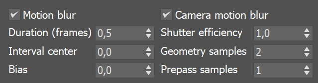
Example: Motion Blur
This example demonstrates the difference between the renders when Motion blur is enabled and disabled. The camera used is the Perspective 3ds Max view with Duration (frames) set to 0.02 and the rest of the parameters are set to their default values.
offon

Example: Duration
The following scene consists of three-frame animation of a moving cube. In the first frame the cube is on the left. In the second frame it is at the sphere. And in the third frame the cube is on the right.
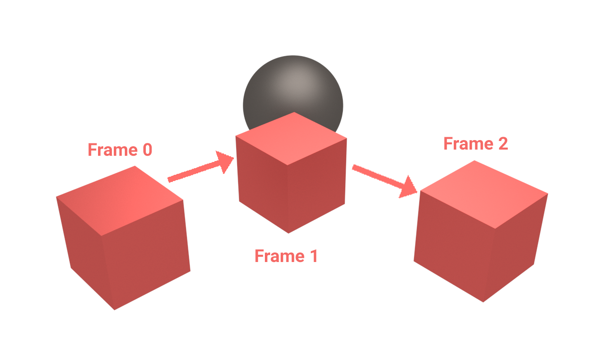
The following images show frame 1 rendered with different duration values:
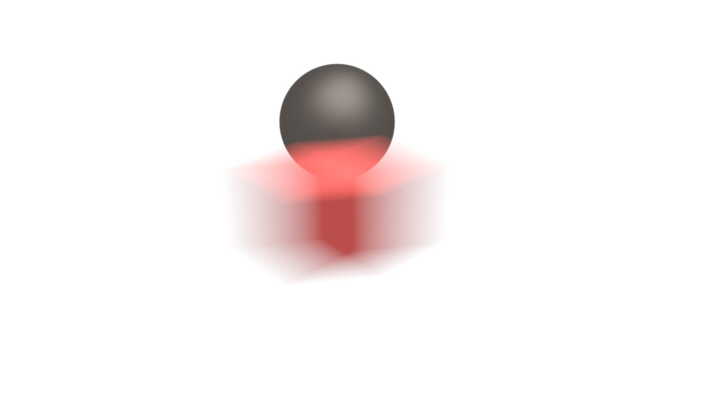
Duration 0.5 (frames)
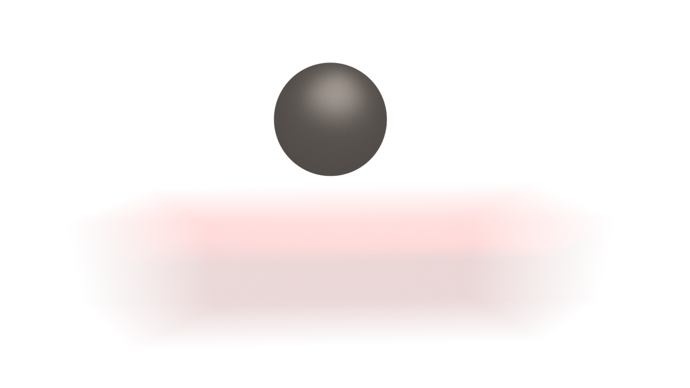
Duration 2.0 (frames)
Example: Interval Center
This example demonstrates the effect of the interval center parameter. The scene is a moving sphere. Here are three sequential frames without motion blur:
Here is the middle frame, rendered with motion blur and three different values for the interval center; the motion blur duration is one frame.
 Interval center = 0.0; the middle of the motion blur interval
Interval center = 0.0; the middle of the motion blur interval
matches the sphere position at the second frame
 Interval center = 0.5; the middle of the interval is halfway
Interval center = 0.5; the middle of the interval is halfway
between the second and the third frame
 Interval center = 1.0; the middle of the motion blur interval
Interval center = 1.0; the middle of the motion blur interval
matches the sphere position at the third frame
Example: Geometry Samples
The following images demonstrate the Geometry samples parameter. Duration (frames) is set to 2. All other parameters are the same as for the previous images. The higher value is set for Geometry samples the more accurate is the estimated object motion. However, excessive increase of this value results in long rendering times:
Geometry samples = 2
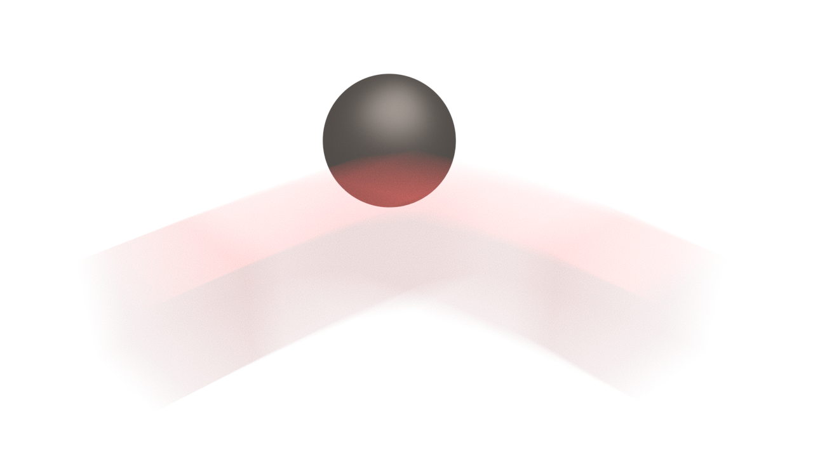
Geometry samples = 8

Geometry samples = 2
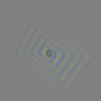
Geometry samples = 3

Geometry samples = 6
Geometry samples = 10
The geometry samples parameter is useful when motion-blurring complex motions, for example fast-rotating objects. Here is an example with an accelerating airplane propeller:
Note: You can control the number of geometry samples on a per-object basis (from the Object properties dialog). This is useful if you need a lot of samples only for some objects in the scene (for example, the wheels of a car) while other objects (the car body) can do with fewer samples, thus saving memory and speeding rendering.
Depth of Field
These parameters control the depth of field effect when rendering with a standard 3ds Max camera or with a perspective viewport. The parameters are ignored if you render from a Physical Camera ( VRayPhysicalCamera ) view.
The quality of the DOF effect (the noise) is controlled from the settings of the currently selected image sampler.
On – Turns the Depth-of-Field effect on.
Aperture – The size of the virtual camera aperture in world units. Small aperture sizes reduce the DOF effect, while larger sizes produce more blur.
Center bias – Determines the uniformity of the DOF effect. A value of 0.0 means that light passes uniformly through the aperture. Positive values mean that light is concentrated towards the rim of the aperture, while negative values concentrate light at the center.
Sides – Allows you to simulate the polygonal shape of the aperture of real-world cameras. When this option is off, the shape is assumed to be perfectly circular.
Get from camera – When enabled, the Focal distance is determined from the camera target if the rendering is done from a camera view.
Focal distance – Determines the distance from the camera at which objects are in perfect focus. Objects closer or further than that distance are blurred.
Anisotropy – Allows the stretching of the bokeh effect horizontally or vertically. If you want the ratio of height to width of the bokeh to be k:1, then the value for anisotropy should be sqrt(1/k)-1. For example, for anamorphic bokeh, which is 2.39:1, the anisotropy value should be -0.353.
Rotation – Specifies the orientation of the aperture shape.
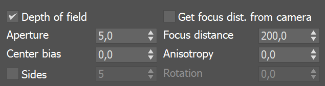
Notes
-
Depth of field is supported only for the Standard camera type. Other camera types do not produce depth of field effect at this time.
-
– Automatic exposure is calculated only for the part of the scene that is visible in the current render. In order to keep your exposure consistent use automatic calculation only for full frames and transfer the values to camera before using a render region or render mask.